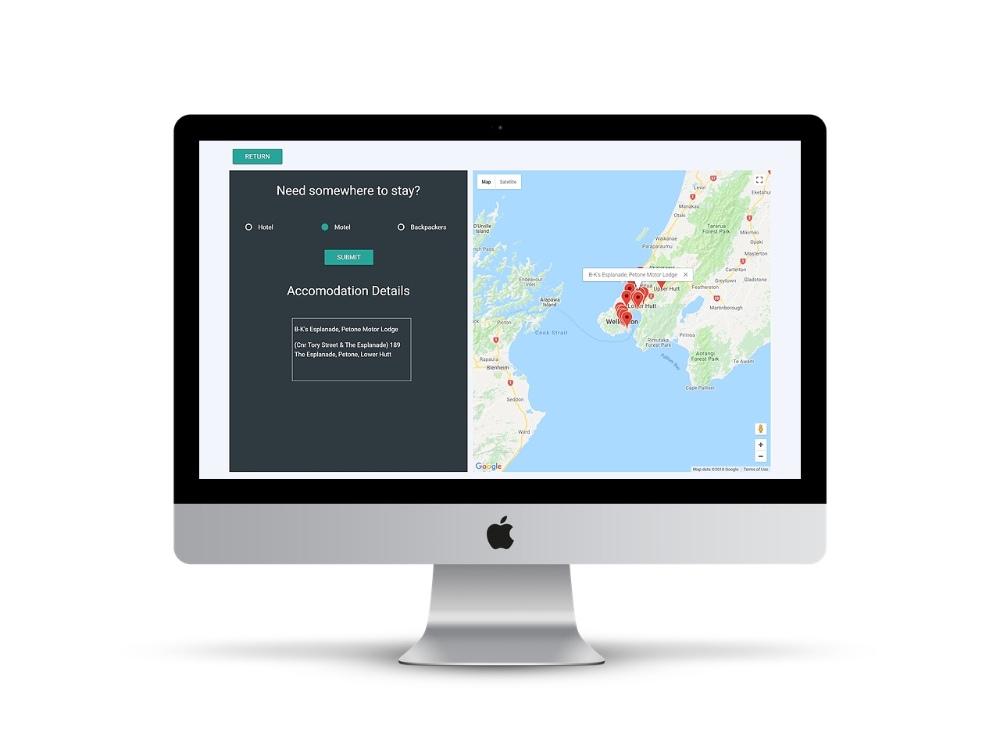

About me
I am currently studying Web and UX Design at Yoobee School of design in Wellington. I have always been fascinated with technology and how it is forever developing. I have worked in hospitality most of my life and understand what a competitive business it can be and that a good website can be make or break for some establishments. However I also know that small family businesses don’t want to spend the huge amounts of money generally associated with a good website and so I want to be able to provide those businesses with a good website without the putting a giant hole in your pocket. If this sounds like something that you would like then take a look at some of my work and get in contact with me.
My Work
Maps and Places API
ViewArt Of Pizza Digital Ordering

Scenario
Art Of Pizza wanted to create new ways for customers to engage with their brand to improve customer engagement and sales of some of their more unique offerings by providing table ordering via digital devices.
Customers will be able to use touch screens at their table or booth, tablet type devices mounted at the bar or their own phones anywhere within the venue. They require a system that enable customers to easily order and see the progress of their order and makes suggestions and/or offers.
Visit Live SiteRoadtrippers

Scenario
Tourism New Zealand works with the tourism industry to positively promote New Zealand internationally. They have a new campaign that is aimed at visitors staying for short periods, arranging their own transport
The project was to create a single page web application that allows users to input information, validate the information and provide meaningful feedback when validation has passed or failed. Display transport options based on the information entered. Calculate and display transport costs to the user
Visit Live SiteMaps and Places API
Scenario
This was a group project using an external API as a data source. We were each tasked with deciding in how we wanted to display our data. Our group chose to use the google maps and google places APIs to create a site about accommodation, recreation and food in the wellington region.
I was responsible for the accommodation page. The user is able to decide what type of accommodation they would like to stay in and when they submit that information the map displays various places around the city. If a user clicks on one of the pins they are provided with more information about that specific location.
Created with Carey Kwan and Florence Lo
Visit Live SiteBehance API
Scenario
Pentagrammer design firm tasked our group to create an app to showcase their designers work. This work was hosted on Behance and so the app consumed the data from the Behance API. The app needed to allow the user to view a:
List of designers, Designer’s details, Designer’s projects, Project details and Overall statistics of a designer’s projects including number of views appreciations and comments
I was responsible to the statistics page and also used google charts to create and display the graphs. The user is able to change what designer’s stats they are viewing by clicking on the dropdown of names.
Created with Carey Kwan and Florence Lo
Visit Live SiteContact
Not sure what your wanting?
Send me a message and we can discuss your ideas further.